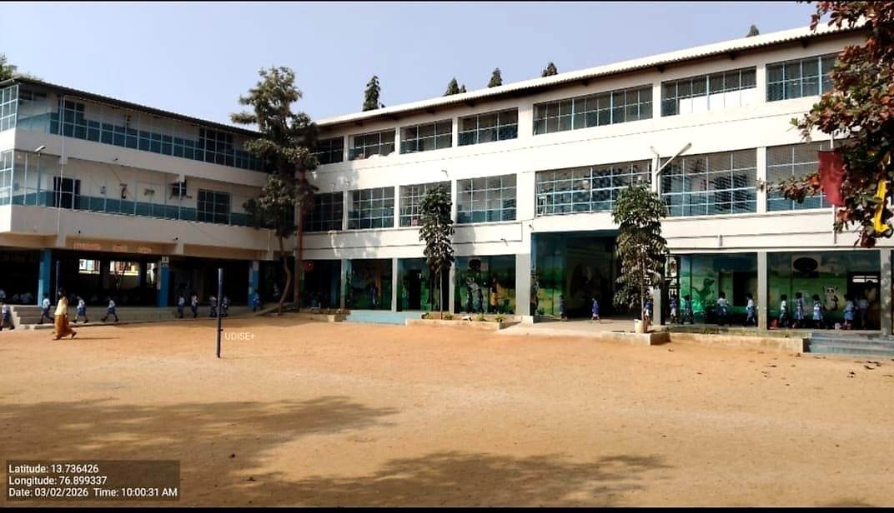

Manjushree English School has been part of the Keshav Nagar community since 1994-95 — a neighbourhood institution built on the everyday work of teaching, listening and caring for children.

Founder & Chairman — Manjushree Vidya Samsthe
Former MLA, Sira Constituency · ಮಾಜಿ ಶಾಸಕರು, ಶಿರಾ ಕ್ಷೇತ್ರ
Manjushree English School owes its existence to the vision of Sri P. M. Ranganathappa — a public servant and educationist who believed that quality English medium education should be within reach of every family in Sira.
A former MLA of the Sira constituency and lifelong champion of the town's growth, he founded the school in 1994-95 under the Manjushree Vidya Samsthe. His conviction — that a school rooted in the community can change generations — continues to guide everything we do.
Manjushree English School was founded in 1994-95 by Sri P. M. Ranganathappa — the former MLA of Sira — on Balaji Nagar Road, Keshav Nagar. His aim was simple: to make quality English medium education available to the families of Sira, without children having to travel far from home.
Over the years the school has grown into a full Primary and Secondary institution, following the Karnataka State Board syllabus. Boys and girls learn side by side in classrooms where English is the medium of instruction, while Kannada, culture and community remain at the heart of school life.
What began as a small local school is now trusted by families across Keshav Nagar and the wider Sira area — a school that many parents once attended themselves, and now send their own children to.
A three-storey building on Balaji Nagar Road, a wide open playground, a welcoming gate on a quiet Sira street — the same campus that families have known and trusted for three decades.



School founded at Keshav Nagar, Balaji Nagar Road, Sira.
Established a strong Primary section following the Karnataka State Board.
Grown to offer full Secondary education up to Class 10.
A trusted co-educational English medium school for the families of Sira.
To be a trusted neighbourhood school where every child grows into a confident learner, a responsible citizen and a lifelong seeker of knowledge — rooted in local values and open to the wider world.
To offer affordable, quality English medium education that combines academic rigour with character formation — helping each student build strong foundations in language, mathematics, science and social understanding.
Manjushree welcomes children of all backgrounds and faiths. We believe a good school is one where teachers know each child, where parents feel welcome, and where discipline and kindness go together.
Our aim is to send each student out of Class 10 with strong basics, good habits and the confidence to take the next step — whether that is Pre-University, ITI, or another path of their choosing.
Our days start with assembly, prayer and a few quiet moments together as a school. Classes are structured but never rushed — teachers take time to make sure every child follows along, and slow learners are given the extra help they need.
Outside the classroom, students take part in sports, cultural programmes and celebrations that mark the Kannada calendar, national days and the school year — small events, held with care, that make school memorable.
That is the everyday work we try to do at Manjushree.
If you live in Keshav Nagar, Balaji Nagar or nearby, we would love to meet you and show you around the school.
Enquire About Admissions →